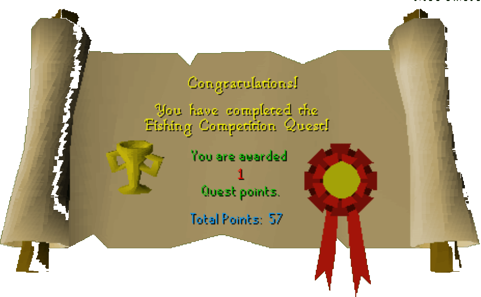

Fishing Contest
Description: The mountain Dwarves home would be an ideal way to get across White Wolf mountain safely. However, the Dwarves aren't too fond of strangers. They will let you through if you can bring them a trophy. The trophy is the prize for the annual Hemenster fishing competition.Difficulty: Novice
Length: Medium
Items & Skills Needed:
- 10 Fishing
Recommended:
- The ability to run past level 44 enemies
Reward: 1 Quest point, 2,437 Fishing XP, access to the underground White Wolf Mountain passage
Instructions:
Talk to the Dwarf and say that you want to use the secret way to cross White Wolf Mountain. Also, tell him you want to become his friend. He will ask you to retrieve a trophy from the Hemenster Fishing Competition and will give you a Competition Pass.
Before entering Hemenster, go north of it and you will see McGrubor's Woods. Go further north and you'll find a loose fence. Push it, head to the west side, find a red vine, and use the spade on it. You should get a red worm, then leave the area.
Return to Hemenster and try to enter the fishing area. A man will say you need a Competition Pass—show it to him to get in.
Talk to the Sinister Stranger. He will say that he doesn't like sunlight. Tell him he's a vampire—he'll deny it and say something nonsensical, but trust me, he really is.
Talk to Bonzo and tell him you want to start the competition. Pay 5 gp, and he will tell you that your fishing spot is beside the oak tree.
Place a garlic clove in the pipes, and the vampire will complain about a bad smell. Bonzo will then tell you that your fishing spot is beside the pipes. Fish there and you should catch a carp. Talk to Bonzo afterward to win the competition.
Return to the dwarf and he will reward you.
Congratulations, Quest Complete!

Note: The video shows 21 Fishing requirement, it's actually 10.
This quest guide was written by Henry-x. Thanks to Weezy for corrections.
This quest guide was entered into the database on Sun, Feb 15, 2004, at 11:36:56 AM by Weezy and was last updated on Wed, Mar 31, 2004, at 05:18:30 PM.